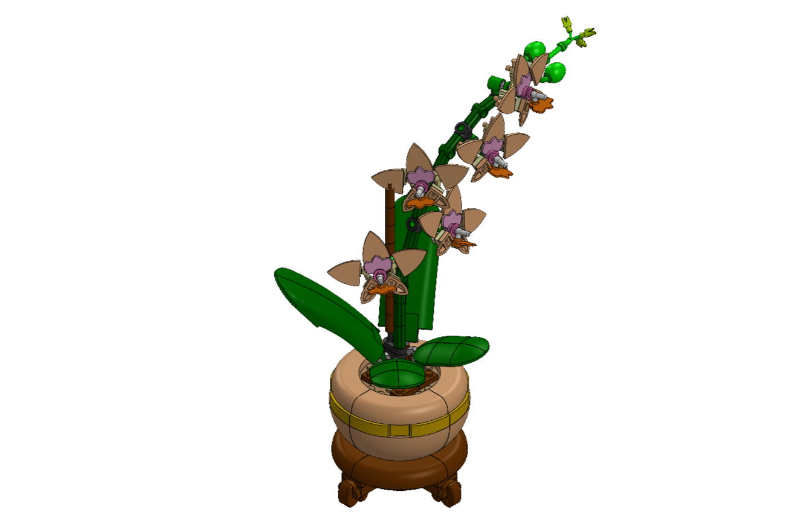

This summer, I wanted to work on my CAD skills. I started modeling the Lego Mini Orchid that I was building as a way to improve my computer aided design skills. What began as a way to represent physical objects through modelling made me curious as to how the different little Lego pieces work in conjecture to each other to create moving objects. That is, I started analyzing the moving parts of this Lego piece and seeing how the individual parts can be assembled through modeling while preserving their individual properties and movements without interfering with other aspects of the model.
With over 70 unique parts and 15 moving portions, this project served as a great way for me to visualize and learn about the in-depth design, planning, testing and other factors that form the final output. For instance, material used to make the Lego pieces plays a pivotal role as it needs to both retain color and weigh less enough to not be heavy to carry but also weigh enough to hold the center of mass of the object at a desired position. It also needs to be a material that is durable and can hold intricate geometry and movement together. I tested out some of the different material available in SolidWorks for these parameters and eventually settled on Lego’s standard ABS plastic.
This venture through Lego has made me interested in using CAD as a tool for analysis rather than solely as a method of visualization. For my next venture, I am considering exploring the details in which crochet patterns and yarn can be represented computationally. I’d like to approach that through attempting to build an online crochet pattern simulator that supports different thread types and designs (Crochet is my hobby, thus the interest in bridging two worlds of mine). Yarn is flexible, continuously deformable, and interacts with neighboring strands through tension and contact. I am interested in exploring how these properties could be represented computationally and whether a model could help identify regions where stress or deformation may concentrate and potentially lead to thread failure.
For now, though, through reverse engineering Lego I have developed a strong foundation in design, CAD modeling, and motion, while growing curious about the potential of computational modeling to understand and analyze physical systems.